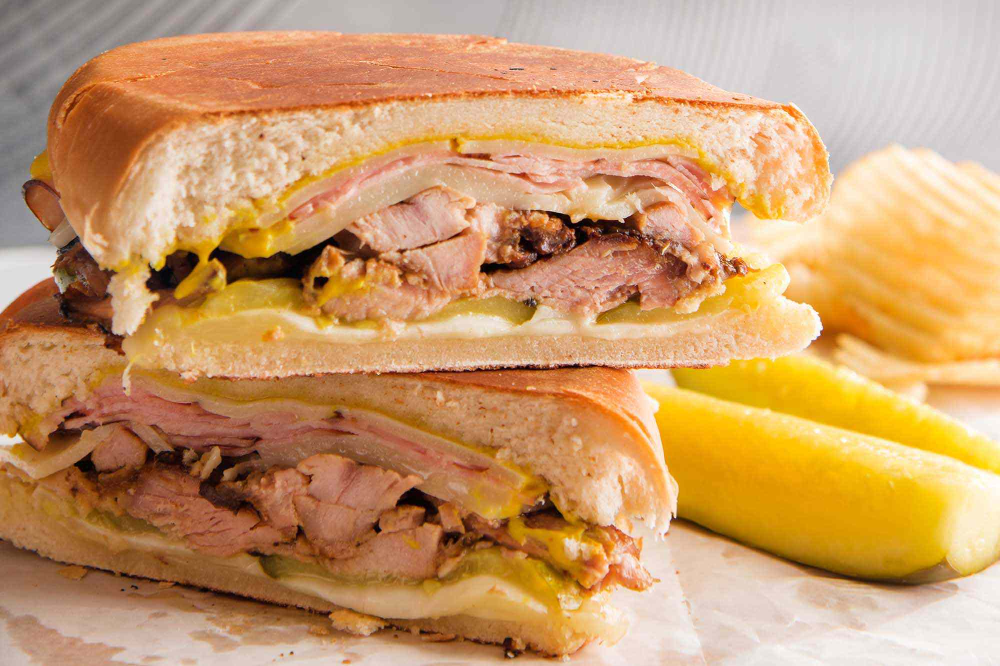

Cuban Sandwich Recipe

Description
Here's how to make the BEST traditional Cuban Sandwich, a.k.a. the Cubano, at home! Layers of mojo-marinated pork roast, ham, cheese, and pickles make this sandwich outstanding. Serve toasted grilled bread sandwich hot or cold!
Ingredients
- 1 (1-pound) loaf Cuban or Italian bread
- 2 tablespoons unsalted butter, softened
- 1 small clove garlic, crushed
- 2 tablespoons yellow mustard
- 8 ounces thinly sliced Swiss cheese, about 10 slices
- 1 pound shredded pork roast, heated until warmed through
- Sliced dill pickles, as needed
- 10 slices Black Forest or smoked ham
Steps
- Heat your skillet
- Toast the bread
- Make, then spread, the schmear
- Layer the meat and cheese
- Grill the Cubano
- Serve!